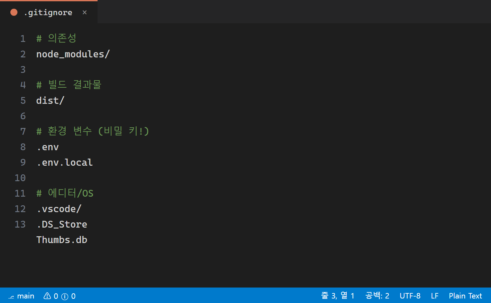
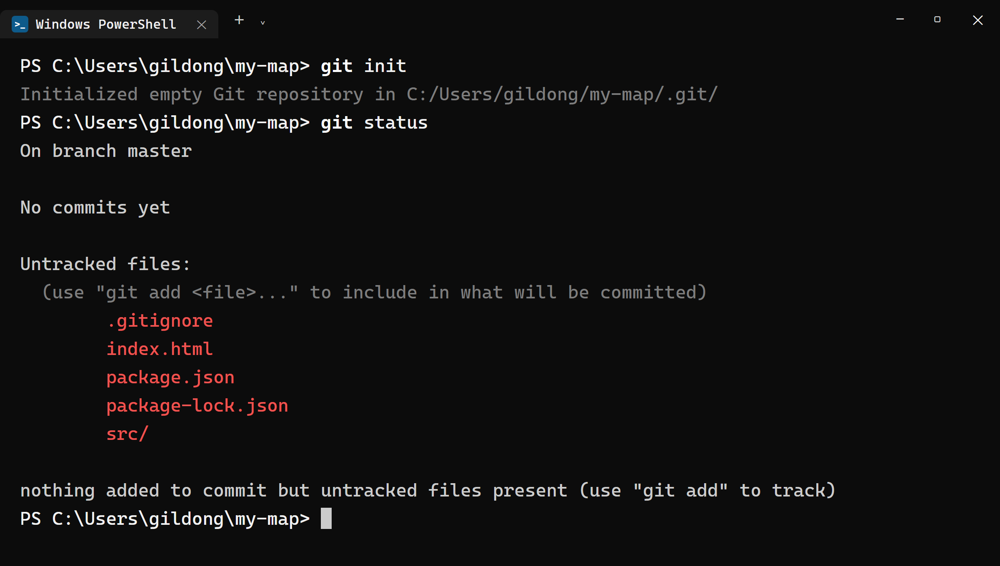
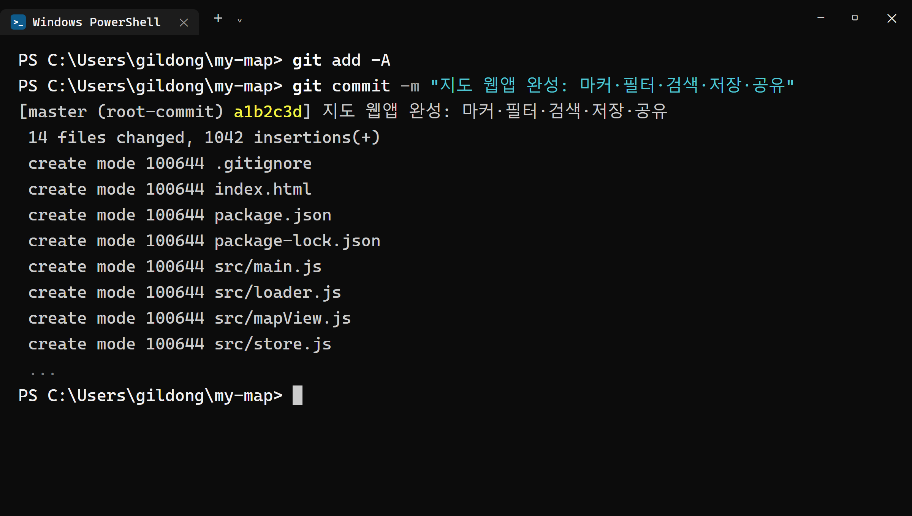
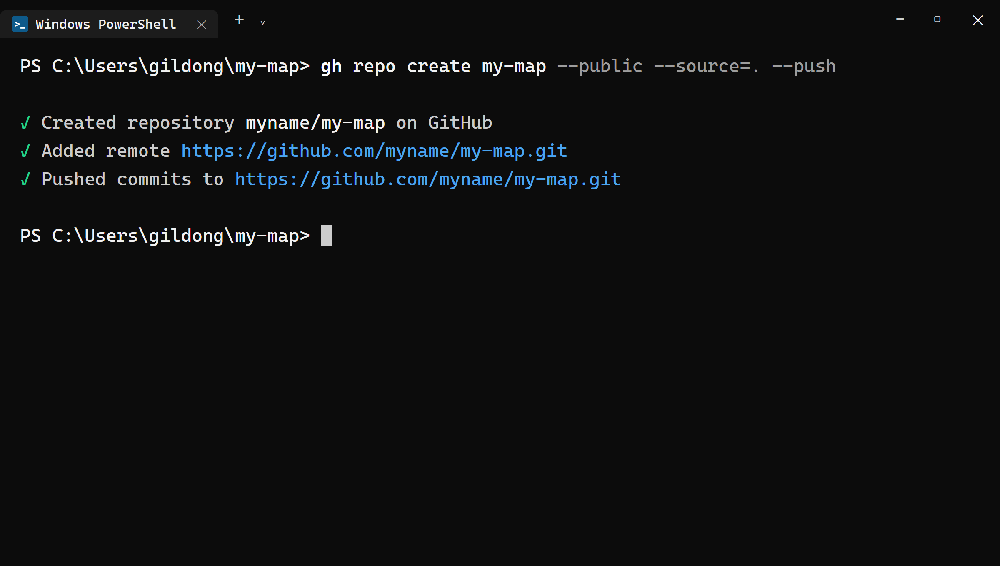
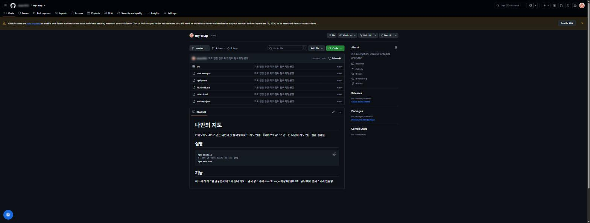
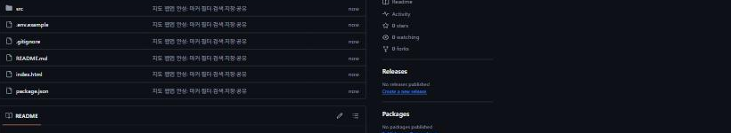
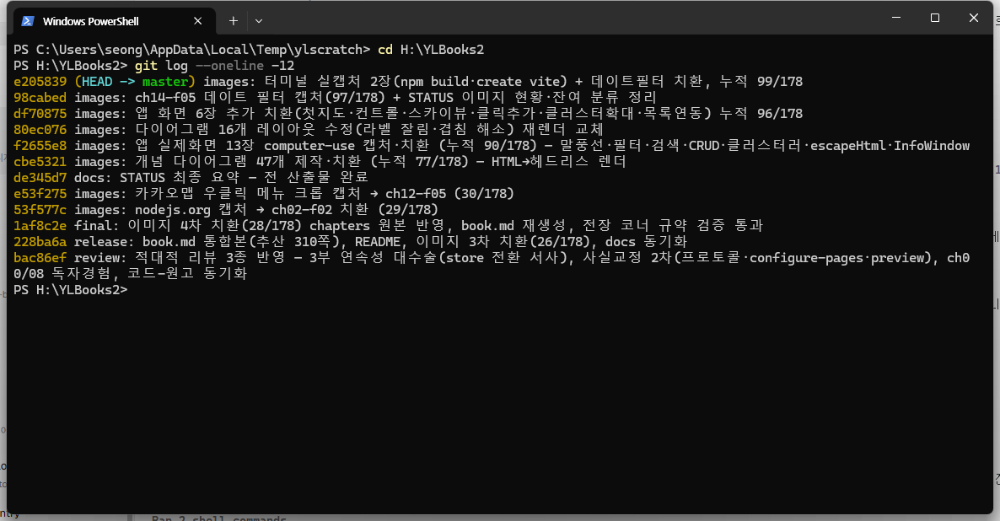

24장 GitHub에 올리기¶
이 장에서 배우는 것
my-map프로젝트를 Git 저장소로 만들고 첫 커밋을 남깁니다.gitignore를 최종 점검합니다 —.env와node_modules를 왜 빼는지 확실히 이해합니다gh repo create my-map --public --source=. --push한 줄로 프로젝트를 깃허브에 올립니다- GitHub 웹 화면에서 올라간 파일을 눈으로 검수하고,
.env가 없는지 반드시 확인합니다 - 앞으로 평생 쓸 커밋 메시지 습관을 만듭니다
드디어 5부입니다. 돌아보면 꽤 먼 길을 왔습니다. 빈 폴더에서 출발해(8장) 지도를 띄우고(9장), 마커를 찍고(11장), 말풍선과 필터와 검색을 달고(13~15장), 장소를 추가·저장·관리하고(16~19장), 내 위치와 공유와 클러스터러까지(20~22장), 마지막으로 스마트폰 화면에도 맞췄습니다(23장). 여러분의 my-map은 이제 어디 내놓아도 부끄럽지 않은 지도 웹앱입니다.
그런데 이 멋진 앱이 지금 어디에 있나요? 여러분의 컴퓨터 안에만 있습니다. 친구에게 보여 주려면 노트북을 들고 가야 하고, 하드디스크가 고장 나면 함께 사라집니다. 5부의 목표는 이 앱을 세상으로 내보내는 것입니다. 그 첫걸음이 오늘, 프로젝트를 깃허브에 올리는 일입니다. 다음 장에서 배울 배포(GitHub Pages)도, 마지막 장의 README 자랑도, 전부 코드가 깃허브에 올라가 있어야 시작됩니다.
좋은 소식이 있습니다. 오늘 할 일의 연습은 이미 5장에서 끝냈다는 것입니다. hello-github 연습 저장소를 만들면서 git init → commit → gh repo create의 네 박자를 한 번 밟아 봤지요. 오늘은 같은 박자를 진짜 프로젝트로 밟습니다. 다만 진짜이기 때문에 연습 때는 없던 긴장감이 하나 생깁니다. 이 프로젝트에는 카카오 JavaScript 키가 든 .env 파일이 있습니다. 이 파일이 딸려 올라가면 안 됩니다. 그래서 이번 장의 절반은 "올리기"가 아니라 "빼고 올리기"에 대한 이야기입니다.
24.1 올리기 전 점검 — 무엇을 빼고 올릴 것인가¶
이삿짐을 쌀 때 모든 물건을 다 싸지는 않습니다. 쓰레기는 버리고, 냉장고 속 음식은 비우고, 귀중품은 따로 챙깁니다. 저장소에 올릴 짐을 쌀 때도 똑같습니다. 프로젝트 폴더 안의 모든 파일이 깃허브에 갈 자격이 있는 건 아닙니다. my-map 폴더를 열어 짐을 분류해 봅시다.
올릴 것 — 앱의 설계도에 해당하는 파일들입니다. index.html, src 폴더의 자바스크립트와 CSS 전부, 그리고 package.json. 이 파일들만 있으면 누구든, 어떤 컴퓨터에서든 우리 앱을 다시 살려낼 수 있습니다.
뺄 것 — 두 가지가 있고, 빼는 이유는 정반대입니다.
첫 번째는 .env입니다. 빼는 이유는 비밀이라서입니다. 8장에서 우리는 카카오 JavaScript 키를 코드에 직접 적지 않고 .env라는 비밀 서랍에 넣었습니다. 잠시 후 우리는 저장소를 --public, 즉 전 세계 누구나 볼 수 있게 만들 겁니다. 그 순간 저장소 안의 모든 파일은 구글 검색에도 걸리는 공개 문서가 됩니다. 실제로 공개 저장소에 실수로 올라간 API 키만 자동으로 긁어모으는 봇들이 24시간 돌아다닙니다. 우리 카카오 키는 7장에서 등록한 도메인에서만 동작하는 안전장치가 있긴 하지만, 열쇠를 대문에 붙여 두고 "어차피 우리 집 자물쇠에만 맞아요"라고 하는 것과 열쇠를 주머니에 넣는 것 중 무엇이 옳은 습관인지는 자명합니다. 키는 서랍에, 서랍은 내 컴퓨터에.
두 번째는 node_modules입니다. 이쪽은 비밀이라서가 아니라 짐이라서 뺍니다. 이 폴더는 npm이 설치해 준 부품 창고인데, 열어 보면 파일이 수천~수만 개에 용량도 수십~수백 메가바이트씩 나갑니다. 그런데 이 창고는 package.json이라는 주문서만 있으면 npm install 명령 한 번으로 언제든 다시 채워집니다. 다시 말해 주문서(올림)만 있으면 창고(뺌)는 재생성됩니다. 이케아 가구를 택배로 보낼 때 조립 완성품 대신 부품 목록이 든 설명서를 보내는 셈이지요. 전 세계 개발자들이 예외 없이 지키는 약속이라, 깃허브에서 node_modules가 통째로 올라간 저장소를 보면 다들 초보의 실수라는 걸 알아챕니다.
이 "뺄 목록"을 적어 두는 파일이 바로 .gitignore였습니다. 8장에서 .env를 만들 때 Claude Code가 한 번 점검해 줬지만, 그때는 저장소를 만들기 한참 전이었습니다. 올리기 직전인 지금, 마지막으로 재점검합시다. 바이브코딩답게 점검도 시킵니다.
🗣 이렇게 시키세요
my-map 프로젝트를 깃허브 공개 저장소에 올리기 전 점검을 해줘. .gitignore에 .env와 node_modules, dist가 빠짐없이 들어 있는지 확인하고, 없으면 추가해줘. 그리고 이 프로젝트에서 절대 공개되면 안 되는 파일이 또 있는지 목록으로 보고해줘.
Claude Code가 .gitignore를 열어 확인하고, 부족한 항목이 있으면 채워 넣은 뒤 보고합니다. 점검이 끝난 .gitignore에는 최소한 이 세 줄이 있어야 합니다.
한 줄씩 읽어 봅시다. node_modules는 방금 이야기한 부품 창고, .env는 열쇠 서랍입니다. dist는 아직 낯설 텐데, 25장에서 npm run build를 실행하면 생기는 빌드 결과물 폴더입니다. 이것도 창고와 같은 이유 — 소스코드만 있으면 언제든 다시 만들 수 있어서 — 로 뺍니다. Vite 템플릿의 .gitignore에는 이 밖에도 *.local, 로그 파일, 에디터 설정 폴더 같은 항목이 미리 들어 있는데, 모두 "다시 만들 수 있거나, 내 컴퓨터에서만 의미 있는 것"이라는 같은 원칙으로 묶입니다.

⚠️ 주의
.gitignore는 앞으로의 커밋에서만 파일을 빼 줍니다. 이미 커밋된 파일을 소급해서 지워 주지는 않습니다. Git은 역사를 기록하는 도구라서, 한번 커밋에 들어간 .env는 나중에 파일을 지우고 다시 커밋해도 과거 역사 속에 그대로 남습니다. 깃허브에서 커밋 역사를 뒤지면 누구나 꺼내 볼 수 있지요. 그래서 순서가 중요합니다 — 반드시 .gitignore 점검이 먼저, 커밋은 그다음입니다. 만약 이미 .env가 커밋된 뒤라면 이 장 끝의 24.4절 응급처치를 따라 주세요.
24.2 git init에서 첫 커밋까지¶
짐 분류가 끝났으니 이제 기록을 시작합니다. 먼저 my-map 폴더의 터미널에서 현재 상태부터 확인해 봅시다. 3장에서 배운 그 명령, 상태 확인의 만능 열쇠입니다.
여기서 여러분은 둘 중 하나의 화면을 만납니다.
경우 1 — fatal: not a git repository ... 라는 오류가 나온다. 놀랄 것 없습니다. npm create vite는 폴더와 파일만 만들어 줄 뿐 Git 저장소로 초기화해 주지는 않기 때문에, 그동안 한 번도 git init을 하지 않았다면 이 오류가 정상입니다. 지금부터 함께 만들면 됩니다.
경우 2 — 파일 목록이 주르륵 나온다. 3장에서 배운 커밋 습관을 따라 중간중간 커밋을 남겨 온 분들입니다. 훌륭합니다. 이미 저장소가 있으니 아래에서 git init은 건너뛰고, 남은 변경분을 커밋하는 부분부터 따라오시면 됩니다.
이번에도 Claude Code에게 통째로 시켜 보겠습니다. 5장의 연습 프롬프트와 비슷하지만, 이번에는 점검 조건을 함께 겁니다.
🗣 이렇게 시키세요
my-map 프로젝트를 git 저장소로 초기화하고 첫 커밋을 만들어줘. 커밋 전에 git status로 커밋될 파일 목록을 나에게 먼저 보여주고, .env나 node_modules가 목록에 있으면 멈추고 알려줘. 커밋 메시지는 "지도 웹앱 완성: 마커·필터·검색·저장·공유"로 해줘.
프롬프트에 담긴 태도를 눈여겨보세요. 그냥 "커밋해 줘"가 아니라 "커밋될 목록을 먼저 보여 주고, 위험 신호가 있으면 멈춰라"라는 안전 조건을 걸었습니다. 에이전트에게 일을 맡기더라도 검문소는 사람이 세우는 것 — 1장에서 이야기한 "작게 시키고, 확인하는" 마음가짐이 바로 이런 모습입니다. Claude Code는 승인을 받아 가며 대략 다음 명령들을 실행합니다.
한 줄씩 함께 읽어 봅시다.
git init— 이 폴더에.git이라는 숨김 폴더를 만들어 역사 기록을 시작합니다. 아직 아무것도 기록되지 않은, 빈 장부를 편 상태입니다.git status— 커밋 후보 파일들을 보여 줍니다. 여기가 오늘의 검문소입니다.git add -A— 모든 변경 파일을 스테이지(기록 대기석)에 올립니다. 3장의 비유를 다시 쓰면, 사진 찍을 사람들을 촬영장에 세우는 단계입니다.git commit -m "..."— 대기석에 오른 모습 그대로 역사에 도장을 찍습니다.-m뒤가 이 커밋의 이름표입니다.
검문소에서 무엇을 봐야 할까요? git status의 출력에서 Untracked files 목록을 훑어보세요. index.html, package.json, package-lock.json, .gitignore, src/ — 이런 이름들이 보이면 정상입니다. 반대로 .env나 node_modules/가 보이면 절대 진행하면 안 됩니다. 24.1절의 .gitignore 점검으로 돌아가야 합니다. .gitignore가 제 역할을 하고 있다면 두 이름은 목록에 아예 나타나지 않습니다 — Git이 정말로 "못 본 척"하기 때문입니다.

목록이 깨끗하면 진행을 승인합니다. 커밋이 완료되면 이런 출력이 나옵니다.
[master (root-commit) a1b2c3d] 지도 웹앱 완성: 마커·필터·검색·저장·공유
14 files changed, 1042 insertions(+)
create mode 100644 .gitignore
create mode 100644 index.html
...
첫 줄의 a1b2c3d 같은 문자열은 이 커밋의 해시1, 즉 커밋마다 붙는 고유한 일련번호입니다. 14 files changed 숫자는 여러분의 파일 수에 따라 다를 수 있습니다. 중요한 건 그 목록 어디에도 .env가 없다는 사실입니다.

💡 팁
커밋 직후 git ls-files | Select-String env 를 실행해 보면 저장소가 추적 중인 파일 중에 env가 들어간 이름이 있는지 한 번 더 확인할 수 있습니다. 아무것도 안 나오면 합격입니다. git ls-files는 "지금 Git 장부에 올라 있는 파일 전체 목록"을 보여 주는 명령으로, 의심스러울 때마다 꺼내 쓰기 좋은 검사 도구입니다.
24.3 gh repo create — 한 줄로 깃허브에 올리기¶
내 컴퓨터 안의 장부는 완성됐습니다. 이제 이 장부를 깃허브라는 클라우드 금고로 올립니다. 5장에서 배운 그 한 줄이면 됩니다. my-map 폴더의 터미널에서 실행하세요. (물론 Claude Code에게 "이 저장소 깃허브에 public으로 올려 줘"라고 시켜도 같은 명령이 실행됩니다.)
다시 한번 해부해 봅시다. 이번에는 연습이 아니라 실전이니, 옵션 하나하나가 어떤 결정인지까지 짚습니다.
my-map— 깃허브에 만들 저장소 이름입니다. 폴더 이름과 같게 하는 것이 관례입니다. 저장소 주소는github.com/여러분의아이디/my-map이 됩니다.--public— 누구나 볼 수 있는 공개 저장소로 만듭니다. 잠깐, 공개해도 될까요? 됩니다. 우리가 이 순간을 위해 8장부터 키를.env에 격리해 왔기 때문입니다. 코드에는import.meta.env.VITE_KAKAO_JS_KEY라는 호출문만 있을 뿐 키값 자체는 없습니다. 코드는 세상에 공개하되 열쇠는 서랍에 남는 구조가 드디어 진가를 발휘합니다. 그리고 공개여야 하는 실용적인 이유도 둘 있습니다. 포트폴리오는 남이 볼 수 있어야 포트폴리오이고, 25장에서 쓸 GitHub Pages 무료 배포는 공개 저장소에서 제공됩니다.--source=.— 현재 폴더(.)의 저장소를 방금 만든 깃허브 저장소와 연결합니다. 이 연결로 깃허브 쪽 저장소는origin이라는 별명을 얻습니다(5장 복습).--push— 연결만 하고 끝내지 않고, 지금까지 쌓인 커밋을 즉시 밀어 올립니다.
실행하면 몇 초 안에 이런 출력이 나옵니다.
✓ Created repository 여러분의아이디/my-map on GitHub
✓ Added remote https://github.com/여러분의아이디/my-map.git
✓ Pushed commits to https://github.com/여러분의아이디/my-map.git

체크 표시 세 줄 — 만들었고(Created), 연결했고(Added remote), 올렸습니다(Pushed). 몇 달의 작업이 클라우드에 안착하는 데 걸린 시간은 몇 초입니다. 만약 "Name already exists" 오류가 나온다면 예전에 같은 이름의 저장소를 만든 적이 있다는 뜻이니, 이름을 my-map-app처럼 바꾸거나 기존 저장소를 정리한 뒤 다시 실행하면 됩니다. 인증 관련 오류가 나온다면 gh auth status로 로그인 상태부터 확인하세요(5장).
💡 팁
git init이 만드는 기본 브랜치 이름은 Git 설정에 따라 master일 수도, main일 수도 있습니다. 어느 쪽이든 gh repo create --push는 그대로 올려 주므로 오늘 실습에는 지장이 없습니다. 요즘 깃허브의 표준은 main이라서, 통일해 두고 싶다면 푸시 전에 git branch -M main 한 줄로 브랜치 이름을 바꿀 수 있습니다. 25장의 배포 워크플로에서 브랜치 이름을 다시 만나게 되니 기억해 두세요.
24.4 GitHub 웹에서 확인 — 검수는 눈으로¶
터미널의 체크 표시를 믿는 것과 내 눈으로 확인하는 것은 다릅니다. 특히 오늘은 "무엇이 올라갔나"만큼 "무엇이 안 올라갔나"가 중요한 날이니, 꼭 웹 화면으로 검수합시다.
브라우저에 github.com/여러분의아이디/my-map 저장소 페이지가 열립니다. 가운데 파일 목록에 index.html, package.json, src 폴더가 보이고, src를 클릭해 들어가면 main.js, mapView.js, store.js 등 우리가 함께 만들어 온 파일들이 그대로 있습니다. 여러분의 코드가 인터넷 주소를 가진 순간입니다.

이제 검수 목록을 하나씩 확인합니다.
.env가 파일 목록에 없는가? — 가장 중요합니다. 목록을 위에서 아래까지 훑어보세요. 없어야 정상입니다.node_modules폴더가 없는가? — 있다면 저장소가 필요 없이 무거워진 것입니다..gitignore는 있는가? — 이 파일 자체는 비밀이 아니므로 올라가는 게 맞습니다. 오히려 올라가 있어야 다른 컴퓨터에서 받아 작업할 때도 같은 보호가 유지됩니다.- 커밋이 보이는가? — 파일 목록 위의 커밋 수 표시(예: "1 commit")를 눌러 보세요. 방금 만든 "지도 웹앱 완성: ..." 커밋이 역사의 첫 페이지에 기록돼 있습니다.

검색창에서도 확인할 수 있습니다. 저장소 페이지 상단의 검색창에 VITE_KAKAO_JS_KEY를 입력해 보세요. 검색 결과에 loader.js 같은 코드 파일(키를 부르는 쪽)만 나오고, 키값이 적힌 파일(키를 담은 쪽)은 나오지 않아야 합니다. 이 확인까지 통과했다면, 여러분은 "비밀을 지키며 공개하는" 오픈소스 세계의 기본기를 정확히 해낸 것입니다.
⚠️ 주의
만약 .env가 보인다면 당황하지 말고 두 가지를 순서대로 하세요. 첫째, 유출된 키를 무효화합니다. developers.kakao.com → 내 애플리케이션 → 앱 설정 → 앱 키에서 JavaScript 키를 재발급하면 이전 키는 즉시 죽습니다. 새 키를 .env에 넣으면 앱은 계속 동작합니다. 둘째, 저장소를 청소합니다. Claude Code에게 ".env가 깃허브에 올라갔어. 추적에서 제거하고 .gitignore에 추가해서 다시 푸시해 줘. 커밋 역사에 남은 것도 지워야 하면 방법을 알려 줘"라고 시키세요. 키 재발급이 먼저인 이유는, 역사 청소가 끝나기 전까지는 키가 계속 노출 상태이기 때문입니다. 열쇠를 잃어버렸으면 자물쇠부터 바꾸는 게 순서입니다.
24.5 커밋 메시지 — 미래의 나에게 보내는 쪽지¶
저장소가 깃허브에 자리 잡았으니, 이제부터의 이야기는 "습관"입니다. 오늘 이후 여러분은 기능을 고칠 때마다 커밋하고 푸시하게 됩니다. 그때마다 쓰는 커밋 메시지, 대충 지어도 될까요?
석 달 뒤의 여러분을 상상해 봅시다. 지도가 갑자기 이상해져서 커밋 역사를 뒤지는 중입니다. 역사가 이렇게 적혀 있다면 어떨까요 — "수정", "수정2", "진짜 마지막", "ㅁㄴㅇㄹ". 어느 커밋으로 되돌아가야 할지 알 길이 없습니다. 반대로 "카테고리 필터 추가", "말풍선 닫힘 버그 수정", "모바일에서 사이드바 접기"라고 적혀 있다면? 범인 후보가 한눈에 추려집니다. 커밋 메시지는 남에게 잘 보이려고 쓰는 게 아니라, 미래의 나에게 보내는 쪽지입니다. 3장에서 커밋을 "게임의 세이브 포인트"에 비유했는데, 메시지는 그 세이브 파일의 이름입니다. "저장1"보다 "보스전 직전"이 유용한 것과 같은 이치입니다.
좋은 메시지의 조건은 거창하지 않습니다. 세 가지면 충분합니다.
- 한 커밋 = 한 가지 일. "필터 추가 + 버그 수정 + 색상 변경"을 한 커밋에 몰아넣으면 되돌리기가 불가능해집니다. 기능 하나가 눈으로 확인될 때마다 커밋 — 14장부터 지켜 온 그 리듬입니다.
- 첫 줄에 요약 한 문장. "무엇을 했는지"가 드러나게 씁니다. 한국어로 써도 전혀 문제없습니다. 여러분의 저장소니까요.
- '왜'가 필요하면 덧붙이기. 이유가 궁금해질 만한 변경이라면
git commit -m "요약" -m "이유 설명"처럼 두 번째-m으로 본문을 붙일 수 있습니다.
그리고 바이브코딩 시대의 반가운 소식 — 커밋 메시지야말로 AI가 잘 쓰는 글입니다. Claude Code에게 "지금까지 작업 커밋해 줘"라고만 해도, 변경된 파일들을 읽고 알맞은 메시지를 지어서 보여 줍니다. 우리가 할 일은 그 메시지가 실제 작업 내용과 맞는지 읽고 승인하는 것입니다. 메시지가 마음에 안 들면 "메시지는 ~로 바꿔서 커밋해"라고 한마디 얹으면 됩니다.
쌓인 역사를 돌아보는 명령도 하나 챙겨 둡시다. 커밋 한 줄 요약을 시간 역순으로 보여 주는 명령입니다.

이 목록이 곧 여러분의 개발 일지입니다. 깃허브 프로필의 잔디밭(기여 그래프)에도 커밋한 날마다 초록 칸이 채워지니, 꾸준함이 눈에 보이는 재미도 있습니다.
🗣 이렇게 시키세요
지금까지 변경된 내용을 커밋하고 푸시해줘. 커밋 메시지는 변경 내용을 보고 네가 한국어로 알맞게 지어서, 커밋하기 전에 나한테 먼저 보여줘.
앞으로 작업을 마칠 때마다 쓰게 될 마무리 인사입니다. 5장에서 예고했던 커밋하고(commit) 밀어 올리는(push) 두 박자가 오늘부터 여러분의 진짜 습관이 됩니다. 이 두 박자만 지키면 "하루 작업이 통째로 날아가는" 최악의 사고는 여러분에게 일어나지 않습니다.
24.6 마무리¶
이번 장에서 my-map은 내 컴퓨터 속 폴더에서 인터넷 주소를 가진 공개 저장소가 되었습니다. .gitignore로 .env(비밀이라서)와 node_modules(다시 만들 수 있어서)를 걸러 냈고, git init부터 첫 커밋까지 검문소를 거치며 진행했고, gh repo create my-map --public --source=. --push 한 줄로 올린 뒤 웹 화면에서 눈으로 검수까지 마쳤습니다. 코드는 공개하되 열쇠는 지키는 것 — 오늘 배운 이 균형 감각은 어떤 프로젝트를 하든 평생 따라다닐 기본기입니다.
📌 핵심 요약
- 저장소에는 재생성 가능한 것과 비밀은 뺀, 설계도만 올립니다.
.env는 비밀이라서,node_modules는npm install로 다시 만들 수 있어서 뺍니다. .gitignore는 앞으로의 커밋만 걸러 줍니다. 반드시.gitignore점검 → 커밋 순서를 지키세요.- 커밋 전
git status가 검문소입니다. Untracked 목록에.env·node_modules가 보이면 진행 금지. gh repo create my-map --public --source=. --push— 저장소 생성, origin 연결, 푸시까지 한 줄에 끝납니다.- 올린 뒤에는 웹에서 검수합니다:
.env없음,node_modules없음, 커밋 역사 확인. - 커밋 메시지는 미래의 나에게 보내는 쪽지 — 한 커밋 한 가지 일, 첫 줄 요약이면 충분합니다.
🤔 생각해보기
Q1. .env와 node_modules는 둘 다 깃허브에 올리지 않지만, 빼는 이유는 서로 다릅니다. 각각 한 문장으로 설명해 보세요.
✍️ ________
Q2. 친구가 여러분의 공개 저장소를 클론(다운로드)해서 실행하려고 합니다. 코드 말고 친구가 스스로 준비해야 하는 것은 무엇무엇일까요? (힌트: 저장소에 없는 두 가지)
✍️ ________
✏️ 연습 문제
git ls-files를 실행해 저장소가 추적 중인 파일 목록을 확인하고,.env가 없는 것을 직접 검증해 보세요.src/style.css에서 아무 색상 하나를 바꾼 뒤, Claude Code에게 커밋 메시지를 지어서 커밋·푸시하게 시켜 보세요. 그리고 깃허브 웹에서 새 커밋이 보이는지 확인해 보세요.- 깃허브 저장소 페이지의 커밋 목록에서 첫 커밋을 클릭해, 그 커밋에 포함된 파일 목록과 24.2절의
git status검문소에서 본 목록이 일치하는지 비교해 보세요. .gitignore에서.env줄을 지우면git status출력이 어떻게 달라지는지 실험해 보고, 반드시 다시 되돌려 놓으세요.
🔎 더 찾아보기
.env.example— 키값은 비우고 변수 이름만 적어 저장소에 올려 두는 견본 파일. 협업자에게 "이런 키가 필요하다"를 알리는 관례입니다.git rm --cached— 파일은 남기고 Git 추적에서만 빼는 명령. 실수로 커밋한 파일을 빼낼 때 씁니다.Conventional Commits—feat:,fix:같은 접두어로 커밋 메시지를 규격화하는 세계적 관례.GitHub Secret scanning— 깃허브가 공개 저장소에서 유출된 API 키를 자동 탐지해 경고해 주는 기능.git revert— 특정 커밋을 "취소하는 새 커밋"을 만들어 안전하게 되돌리는 명령.
다음 장 예고 — 코드는 깃허브에 올라갔지만, 아직 남들이 우리 지도를 쓸 수는 없습니다. 25장에서는
vite build로 앱을 배포용으로 포장하고, GitHub Actions와 GitHub Pages로 전 세계 어디서나 접속되는 진짜 웹 주소를 만듭니다. 카카오 콘솔에 새 도메인을 등록하는 마지막 관문까지 통과하면, 여러분의 지도는 링크 하나로 열리는 서비스가 됩니다.
-
커밋 해시 — 커밋 내용 전체로부터 계산되는 40자리 고유 식별자(SHA-1). 터미널에는 보통 앞 7자리만 줄여서 표시되며,
git log나 깃허브 화면에서 특정 커밋을 가리킬 때 이 번호를 씁니다. ↩